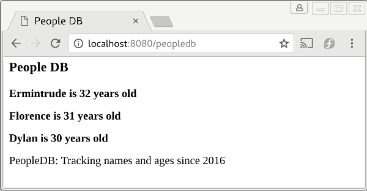

Examples
The following example makes use of a script called peopledb that may be found in the examples subdirectory of the project's github repository.
peopledb may be used to store, update and retrieve name and age records for a group of people. apinate is used to configure the script first to output html, and then to output json, using the raw output parameter.
In the course of the demo, the following config file is created:
{
"contenttype": "html",
"mappings": [
{
"resource": "peopledb",
"command": "/tmp/peopledb.sh",
"params": false,
"template": "peopledb.tmpl",
"querykeys": [
{
"keyname": "fn",
"default": "list"
},
{
"keyname": "name",
"default": ""
},
{
"keyname": "age",
"default": 0
}
]
}
]
}
The following html template is also created:
<html>
<head><title>People DB<title><head>
<body>
<h3>People DB<h3>
{{ range $line := .content }}
<p><b> $line }}<b>lt;p>
{{ end }}
<p>PeopleDB: Tracking names and ages since 2016<p>
<body>
<html>
This configuration means that when apinate is called from a browser, the webpage displayed looks like:

and,
Write a script to display username and login time of all current system users, then map it to a HTTP endpoint that returns JSON. Then change your mind and return HTML. In under 90 seconds.
Map ping to an HTTP endpoint with parameter that returns XML, then test by calling with the parameter www.google.com; then change to return JSON and test it by calling with the parameter 127.0.0.1; then finally change it to return YAML and test by calling with the parameter www.yahoo.com.